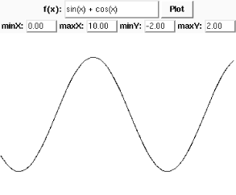

| [ Team LiB ] |
|
16.7 The Canvas WidgetClass Canvas is a powerful, flexible widget used for many purposes, including plotting and, in particular, building custom widgets. Building custom widgets is an advanced topic, and I do not cover it further in this book. This section covers only a subset of Canvas functionality used for the simplest kind of plotting. Coordinates within a Canvas instance c are in pixels, with the origin at the upper left corner of c and positive coordinates growing rightward and downward. There are advanced methods that let you change c's coordinate system, but I do not cover them in this book. What you draw on a Canvas instance c are canvas items, which can be lines, polygons, Tkinter images, arcs, ovals, texts, and others. Each item has an item handle by which you can refer to the item. You can also assign symbolic names called tags to sets of canvas items (the sets of items with different tags can overlap). ALL is a predefined tag that applies to all items; CURRENT is a predefined tag that applies to the item under the mouse pointer. Tags on a Canvas instance are different from tags on a Text instance. The canvas tags are nothing more than sets of items with no independent existence. When you perform any operation, passing a Canvas tag as the item identifier, the operation occurs on those items that are in the tag's current set. It makes no difference if items are later removed from or added to that tag's set. You create a canvas item by calling on c a method with a name of the form create_kindofitem, which returns the new item's handle. Methods itemcget and itemconfig of c let you get and change items' options. 16.7.1 Canvas Methods on ItemsA Canvas instance c supplies methods that you can call on items. The item argument can be an item's handle, as returned for example by c.create_line, or a tag, meaning all items in that tag's set (or no items at all, if the tag's set is currently empty), unless otherwise indicated in the method's description.
Returns an approximate bounding box for item, a tuple of four integers: the pixel coordinates of minimum x, minimum y, maximum x, maximum y, in this order. For example, c.bbox(ALL) returns the minimum and maximum x and y coordinates of all items on c. When c has no items at all, c.bbox(ALL) returns None.
Changes the coordinates for item. Operates on just one item. If item is a tag, coords operates on an arbitrary one of the items currently in the tag's set. If item is a tag with an empty set, coords is an innocuous no-operation.
Deletes item. For example, c.delete(ALL) deletes all items on c.
Returns the sequence of all tags whose sets include item (but not tag ALL, which includes all items, nor CURRENT, whether or not it includes item).
Returns the value of option for item. Operates on just one item. If item is a tag, itemcget returns the value of option for an arbitrary one of the items currently in the tag's set. If item is a tag with an empty set, itemcget returns the empty string ''.
Sets or changes the value of options for item. For example, c.itemconfig(ALL, fill='red') sets all items on c to color red.
c.tag_bind(tag,event_name,callable) sets callable as the callback object for event_name on the items currently in tag's set. Calling c.tag_bind(tag,event_name,callable,'+') adds callable to the previous bindings. Events, callbacks, and bindings are covered in Section 16.9 later in this chapter.
c.tag_unbind(tag,event) removes any binding for event on the items currently in tag's set. Events and bindings are covered in Section 16.9 later in this chapter. 16.7.2 The Line Canvas ItemA Canvas instance c supplies one method to create a line item.
Creates a line item with vertices at the given coordinates and returns the item's handle. coordinates must be an even number of positional parameters, alternately x and y values for each vertex of the line. Canvas coordinates, by default, are in pixels, with the origin (coordinates 0,0) in the upper left corner, the x coordinate growing rightward, and the y coordinate growing downward. You may set different coordinate systems on c, but I do not cover these possibilities in this book. line_options may include:
For example: x=c.create_line(0,150, 50,100, 0,50, 50,0 smooth=1) draws a somewhat S-like curve on c, and binds the curve's handle to variable x. You can then change the curve's color to blue with: c.itemconfig(x,fill='blue') 16.7.3 The Polygon Canvas ItemA Canvas instance c supplies one method to create a polygon item.
Creates a polygon item with vertices at the given coordinates and returns the item's handle. coordinates must be an even number of positional parameters, alternately x and y values for each vertex of the polygon, and there must be at least six positional parameters (three vertices). poly_options may include:
For example: x=c.create_polygon(0,150, 50,100, 0,50, 50,0 fill='',
outline='red')draws two empty red triangles on c as a single polygon, and binds the polygon's handle to variable x. You can then fill the triangles with blue using: c.itemconfig(x,fill='blue') 16.7.4 The Rectangle Canvas ItemA Canvas instance c supplies one method to create a rectangle item.
Creates a rectangle item with vertices at the given coordinates and returns the item's handle. rect_options may include:
16.7.5 The Text Canvas ItemA Canvas instance c supplies one method to create a text item.
Creates a text item at the given x and y coordinates and returns the item's handle. text_options may include:
16.7.6 A Simple Plotting ExampleThe following example shows how to use a Canvas to perform an elementary plotting task, graphing a user-specified function: from Tkinter import *
import math
root = Tk( )
# first, a row for function entry and action button
fram = Frame(root)
Label(fram,text='f(x):').pack(side=LEFT)
func = Entry(fram)
func.pack(side=LEFT, fill=BOTH, expand=1)
butt = Button(fram, text='Plot')
butt.pack(side=RIGHT)
fram.pack(side=TOP)
# then a row to enter bounds in
fram = Frame(root)
bounds = [ ]
for label in 'minX', 'maxX', 'minY', 'maxY':
Label(fram,text=label+':').pack(side=LEFT)
edit = Entry(fram, width=6)
edit.pack(side=LEFT)
bounds.append(edit)
fram.pack(side=TOP)
# and finally the canvas
c = Canvas(root)
c.pack(side=TOP, fill=BOTH, expand=1)
def minimax(values=[0.0, 1.0, 0.0, 1.0]):
"Adjust and display X and Y bounds"
for i in range(4):
edit = bounds[i]
try: values[i] = float(edit.get( ))
except: pass
edit.delete(0, END)
edit.insert(END, '%.2f'%values[i])
return values
def plot( ):
"Plot given function with given bounds"
minx, maxx, miny, maxy = minimax( )
# get and compile the function
f = func.get( )
f = compile(f, f, 'eval')
# get Canvas X and Y dimensions
CX = c.winfo_width( )
CY = c.winfo_height( )
# compute coordinates for line
coords = [ ]
for i in range(0,CX,5):
coords.append(i)
x = minx + ((maxx-minx)*i)/CX
y = eval(f, vars(math), {'x':x})
j = CY*(y-miny)/(maxy-miny)
coords.append(j)
# draw line
c.delete(ALL)
c.create_line(*coords)
butt.config(command=plot)
# give an initial sample in lieu of docs
f = 'sin(x) + cos(x)'
func.insert(END, f)
minimax([0.0, 10.0, -2.0, 2.0])
root.mainloop( )
Figure 16-2 shows the output resulting from this example. Figure 16-2. A sample Canvas |
| [ Team LiB ] |
|